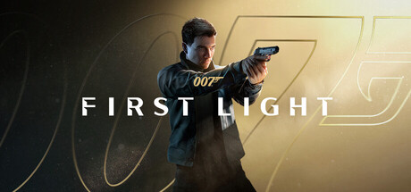

El 27 de mayo llega 007 First Light, el juego de James Bond desarrollado por IO Interactive — el estudio detrás de la trilogía moderna de Hitman. Los previews que salieron a fines de abril fueron contundentes: múltiples outlets lo llaman candidato al juego del año, y GameSpot fue directo al decir que podría ser "el mejor juego de James Bond de la historia".
Quién lo hace y por qué importa
IO Interactive no es una elección obvia para un juego de Bond. El estudio lleva décadas perfeccionando el stealth de sandbox con el Agente 47, un personaje que resuelve problemas de formas absurdamente creativas. En un juego de 007, la expectativa era que repitieran esa fórmula. Pero no lo hicieron.
First Light es más lineal, más cinematográfico y más narrativo que cualquier Hitman. Un juego de espionaje de unos 20 horas de campaña con foco en contar una historia de origen: cómo un joven recluta de MI6 se convierte en el agente más famoso del mundo. La canción del juego, "First Light", fue interpretada por Lana Del Rey y producida por David Arnold, compositor histórico de la saga Bond. El nivel de producción es el esperado para un juego de esta envergadura.
La mecánica de bluff: lo más original del juego
El detalle que más llama la atención en los previews es el sistema de bluff. Si un enemigo te descubre, en vez de reiniciar o entrar en combate obligatorio, Bond puede hablar para salir del aprieto. Las líneas de diálogo son contextuales, no se repiten, y cambian según las decisiones que tomaste antes. Es la integración más natural de la identidad del personaje en la mecánica que vimos en mucho tiempo: Bond no solo pelea, negocia.
Cuánto dura y qué hay después
La campaña ronda las 20 horas según reportes de la longitud oficial confirmada por el equipo. No tiene New Game+, pero sí un modo "Tactical Simulator" al estilo de las escaladas de Hitman que agrega replayability post-juego. IO Interactive ya dijo que están abiertos a una secuela si el juego funciona bien.
Dónde y cuándo
007 First Light sale el 27 de mayo de 2026 en PS5, Xbox Series X/S y PC (Steam, Epic Games Store). La versión de Nintendo Switch 2 llega más adelante en el año. El precio base es USD 69,99 para la edición estándar.
Si el resultado es la mitad de lo que prometen los previews, va a ser uno de los mejores juegos del año. IO Interactive lleva décadas sin dar un golpe fuera de la franquicia Hitman — y todo indica que esta es su apuesta más grande.